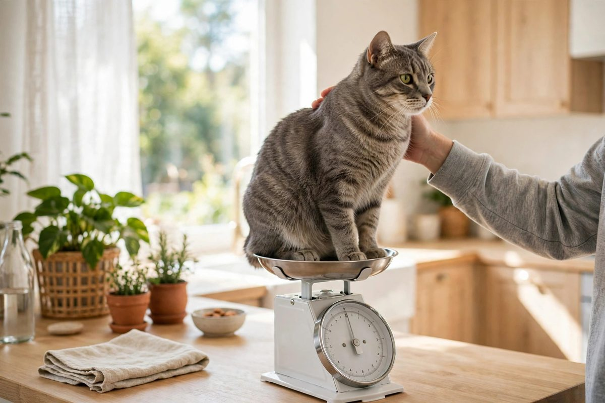

Home › Guides
Cat Weight Management: Helping an Overweight Cat Slim Down Safely

Around half of pet cats carry extra weight, and most owners do not notice until the cat is clearly overweight. Extra weight is not just cosmetic: it strains joints, raises the risk of diabetes and urinary problems, and can shorten a cat's life. The good news is that a slow, steady plan works, and cats do not need crash diets.
How to tell if your cat is overweight
Use the body condition score, a nine-point scale vets use. At the ideal score of four or five, you can feel the ribs easily under a thin fat cover, see a waist from above, and see a slight tuck in the belly from the side. At a score of seven or more, the ribs are hard to feel and the waist has disappeared.
Weigh your cat monthly on the same scales. A cat that gains a few hundred grams a year is drifting upward, even if the change is hard to see. Ask your vet to confirm the score at a check-up, because owners often score their own cats too kindly.
Why cats gain weight
The usual cause is simple: more calories in than out. Free feeding, generous treats, table scraps, and food from more than one person in the household all add up. Indoor cats that play little burn fewer calories, and neutering lowers energy needs, which is why many cats gain weight after the operation.
Medical causes exist too. An underactive thyroid, joint pain that reduces movement, or medicines can all contribute. If a cat gains weight quickly or seems unusually hungry and thirsty, a vet check is sensible before starting any diet.
A safe weight-loss plan
Aim for a slow loss of about one percent of body weight per month. A four-kilogram cat should lose roughly 40 grams a month. Faster loss is risky in cats, because a cat that eats too little can develop fatty liver disease, which is serious.
Start by measuring the current food with kitchen scales for a week, then reduce the daily amount by about ten percent. Use the calorie calculator on our homepage to find a target, and ask your vet to confirm it. Feed two or three small meals a day rather than one large meal, and keep treats under ten percent of calories.
Play and movement
Play is the other half of the plan. Ten minutes of active play a day, split into short sessions, makes a real difference. Use a wand toy, a crumpled paper ball, or a laser pointer that ends with a real toy to catch, so the cat gets the reward of a catch.
Puzzle feeders slow eating and make the cat work for food, which is both enrichment and portion control. Move the food bowl, use stairs and shelves, and rotate toys so the cat stays interested. Even a small increase in daily movement helps.
Staying on track
Weigh the cat every two weeks and keep a simple chart. If weight is not moving after a month, reduce food by another five to ten percent and check that nobody else is feeding the cat. A note on the fridge helps the whole household stay consistent.
Celebrate small progress and be patient. A cat that loses weight slowly and keeps it off is a success. If the cat stops eating, loses weight suddenly, or seems unwell, stop the diet and call the vet. Never starve a cat into losing weight.
Frequently Asked Questions
How fast should a cat lose weight?
Slowly, about 1 percent of body weight per month. Faster weight loss can cause fatty liver disease in cats.
Should I switch to a diet food?
A veterinary weight-management food can help because it is lower in calories but still filling. Ask your vet which one suits your cat.
Do I need to stop treats completely?
No, but keep them small and count them. Use part of the daily food allowance as treats, or offer a few pieces of kibble as a reward.